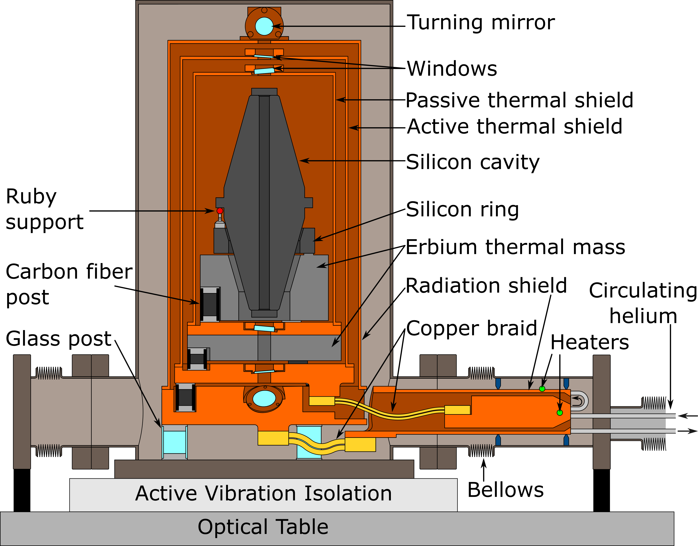
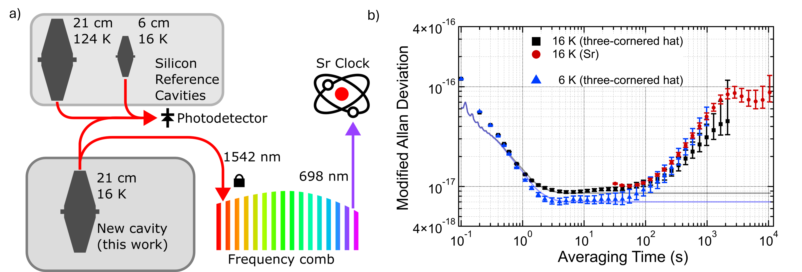
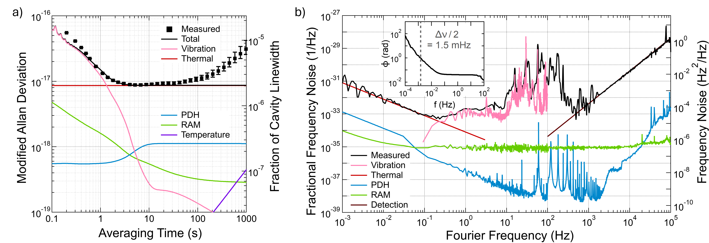
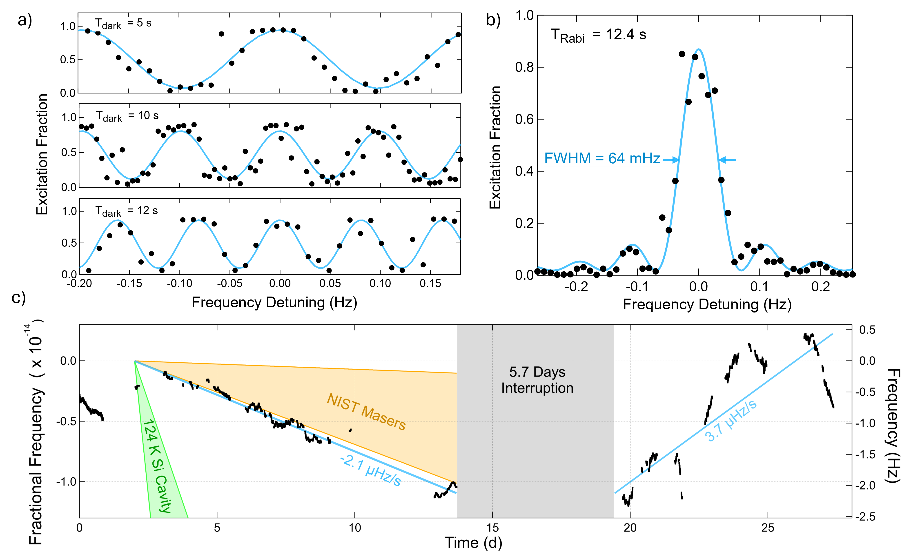
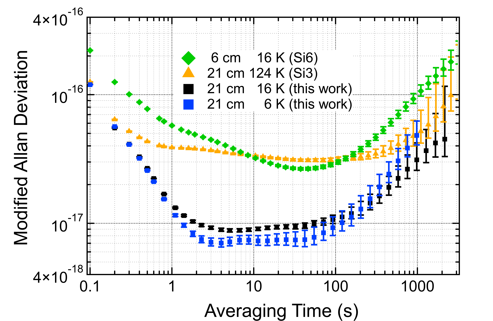
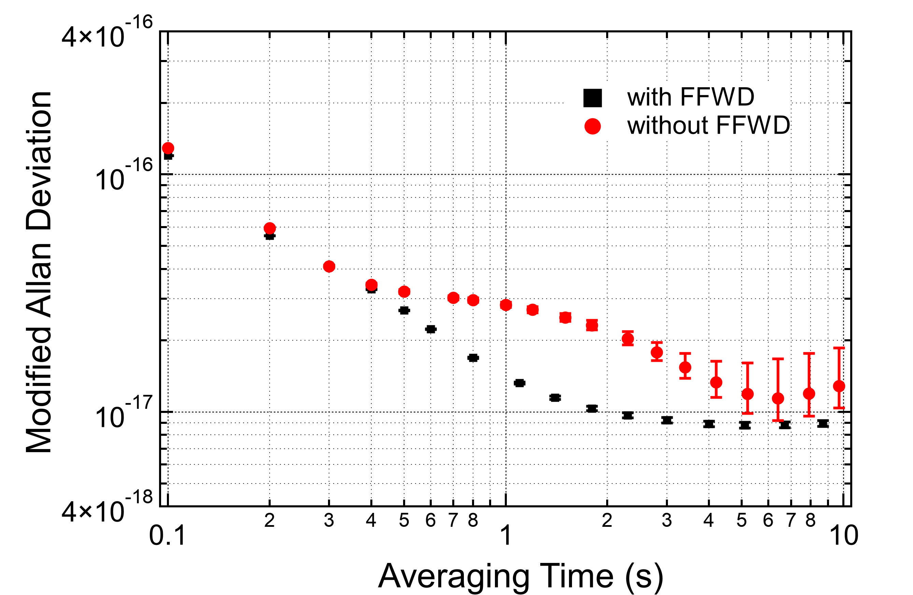

具有频率稳定度的激光器
摘要
我们报道了一种创纪录频率稳定度的激光器，其基于一个21 cm低温硅谐振腔。为获得最佳短期稳定度，谐振腔在6 K下工作以最小化布朗热噪声，在2到50 s的平均时间内达到的分数频率稳定度，线宽为2.5 mHz。为获得最佳长期稳定度，谐振腔在16 K下工作，此处硅的热膨胀系数过零。略高的热噪声将性能限制在，这与预期的温度标度关系一致，但长期性能得到改善。此时激光器的线宽为2.9 mHz，长期频率漂移小于。该激光器用于提升最先进的Sr光晶格钟的性能，使其Rabi与Ramsey探测时间超过。
I 引言
低温硅谐振腔在激光频率稳定度方面处于最先进水平[30, 35, 51, 9]。其量级的分数频率稳定度为窄线宽原子跃迁提供了灵敏探针，极大地促进了不确定度低至第18th或19th位数字的原子钟的发展[32, 18, 23, 46, 1, 22, 11]。在扣除每天几Hz的可预测漂移后，硅谐振腔的长期稳定度与氢脉泽相当，使其可用作全光时间尺度中的飞轮振荡器[31, 38, 12]。除计时外，低温硅谐振腔在基础物理研究中也发挥着重要作用[7, 48, 26, 6, 17, 29, 14, 45]。在许多此类实验中，激光器稳定度仍是主要噪声源之一，因此更稳定的激光器可立即提高测量精密度，并提升量子技术的性能。
为进一步提升现有技术水平，必须抑制反射镜镀膜的本征布朗热噪声，因为它是目前最好的硅谐振腔的主要噪声源[41, 35, 9]。降低热噪声的途径包括：在更低温度下工作[5, 49]、增大腔长[42, 20, 34]、扩大光学模式，或采用本征噪声更低的非常规反射镜[10, 34, 30, 25, 51, 47]。每一种改进都会带来相应的技术挑战，如温度灵敏度、振动灵敏度或系统复杂度。在权衡这些取舍的基础上，我们对JILA和PTB先前的硅谐振腔系统[35]作了两项关键设计改进，使热噪声降低为原来的1/3至1/5，即降至和，具体取决于工作温度。首先，该谐振腔的工作温度低于先前所用的硅热膨胀零点[37]。我们选择在零点或低温恒温器的基础温度[33]下工作。其次，光学模式尺寸从增大到（半径），做法是采用曲率半径为的凹面谐振腔反射镜取代，另一块反射镜为平面镜。这些改进通常会增大振动噪声或振动灵敏度，我们通过一台定制的低振动低温恒温器来加以抑制。
在下，测得激光器不稳定度低于ver，该结果覆盖从到、超过一个数量级的平均时间范围；最佳稳定度为t在。当温度降至时，噪声也降至，这清楚表明性能受限于热噪声。在光频处，激光器线宽为。这一窄线宽已在最先进的Sr光晶格钟上通过超过的光谱探测时间得到验证。该激光器的长期频率漂移低于，与NIST氢脉泽的分数漂移率相当。我们预计，该激光器将大幅提升Boulder原子钟网络内光钟的稳定度，使平均速度提高最多10倍，并为其他多种实验提高测量精密度。
II 系统设计

新谐振腔的两项主要设计改动——10.2 m曲率半径反射镜和16 K运行——在振动与热管理方面带来了额外挑战。较大的曲率半径会提高谐振腔的振动灵敏度，因为任何平行度误差都会使光学模式偏离谐振腔轴线，破坏谐振腔的对称性[2, 40]。腔间隔件的平行度规格为角秒，对应的模式偏移。更低的工作温度更具挑战性，因为它需要基于氦的闭循环低温恒温器。 闭循环低温恒温器的振动会严重限制低温谐振腔系统的性能[4]，即使对于尺寸更小、本应具有更低振动灵敏度的或谐振腔也是如此[9, 52]。使用定制的低振动低温恒温器，我们将谐振腔与冷头的振动隔离。
图 1 给出了谐振腔系统的简化示意图，该系统命名为 Si7，突出了与环境的热隔离和振动隔离。为了在机械上将谐振腔与制冷机解耦，我们采用两级隔振系统。 第一级隔离位于制冷机与光学平台之间。制冷机放置于光学平台附近的地面上，并使用独立的循环氦回路为平台上的装置提供冷却11 1 我们使用ColdEdge Stinger制冷机提供冷却后的氦。产品名称仅供参考，不表示任何认可。。 第二级隔离是主动隔振（AVI）平台，它直接支撑谐振腔并衰减光学平台的振动。AVI平台上的组件通过外部的真空波纹管和内部的软铜编织带与主光学平台机械解耦，从而将循环氦产生的振动限制在光学平台上。
谐振腔通过三个直径为的球形红宝石接触点在其中平面处支撑，这些接触点由具有极高球度和刚度的测量探针改制而成。它们安装在一个硅环上，该硅环与谐振腔的热膨胀相匹配。谐振腔在支撑点上旋转，以最小化垂直加速度灵敏度[27, 36]。我们测得在方向上的原位振动灵敏度为，其中为垂直方向，为水平方向。
在热膨胀零点而非热膨胀零点运行，使谐振腔对温度涨落更不敏感，因为二阶温度灵敏度从降低到 [27, 49]。然而，大多数材料的热容也大大降低，并且更难形成长的热时间常数来对温度涨落进行被动滤波。我们使用铒作为热质量，因为其具有相对较大的体积热容，为（在下），是不锈钢的6倍、铜的13倍[39]。
碳纤维（玻璃）绝缘体因其在（室温）下具有高刚度与热导率之比而被使用，在不同温度级之间提供热隔离，同时不损害振动灵敏度。
采用多层屏蔽结构以实现热稳定。 外层辐射屏蔽由多层隔热毯覆盖，阻挡室温辐射，并被稳定在约。主动屏蔽被主动控制到接近，以调节谐振腔温度。内层被动屏蔽（带铒热质量块）提供一级温度滤波，次级铒质量块在被动屏蔽与谐振腔之间提供第二级被动滤波。从主动屏蔽到谐振腔的总热时间常数约为。主动温度控制将内层铒质量块上传感器的温度稳定到。温度被稳定在测得谐振腔温度灵敏度零交叉点的范围内，从而使残余一阶温度灵敏度低于。一个闭环外传感器确认铒质量块始终处于其设定点的以内，对应的频率波动仅为。
III 频率稳定度

为了表征该激光器的创纪录性能，我们使用另外两个最先进的低温硅谐振腔（Si3 和 Si6）以及一台锶光晶格钟，如图 2a) 所示，并在附录 A 中讨论。三个谐振腔稳频激光器之间的光学外差拍频信号在单个光电探测器上获得，用于三角帽分析 [19]。锶晶格钟 [1] 还通过频率梳测量谐振腔频率，以确认长期性能。图 2b) 给出了两种测量结果，以去除线性漂移后的修正阿伦偏差（MDEV）表示。误差棒为 68% 置信区间，采用 [16] 的方法计算，并假设为闪变频率噪声谱。
在 处，MDEV 在 2 s 至 50 s 内于 附近几乎平坦，这与布朗热噪声所预期的闪变频率噪声一致。这一热噪声水平意味着光学镀膜的机械损耗为 ，与先前在 16 K 测得的值一致 [44]。当温度降至 时，短期性能在 2 s 至 50 s 也提升至 。该改善略小于 相对于温度 的预期标度关系 [41]，但与先前报道的镀膜在 4 K 下的机械损耗一致 [44]。噪声随温度降低而减小以及平坦的噪声基底，提供了有力证据，表明该激光器在 6 K 和 16 K 下均处于热噪声极限。
为了说明完整的激光器噪声谱，建立了如图 3 所示的噪声模型。系统设计使某些噪声源完全可忽略。主动温度控制与被动滤波相结合，确保在 16 K 运行下所有时间尺度上的温度波动均可忽略。锁定噪声（环路外 RAM 与 PDH 环路内噪声之和）在 至 范围内处于散粒噪声极限，并且同样可忽略。
在 与 之间，激光器噪声主要由振动主导，而高达 的噪声也很可能源于振动。在低于 的频率下，我们利用来自倾斜仪的前馈来补偿 AVI 平台引入的缓慢倾斜，如先前报道 [34, 42, 4]。所有结果均包含前馈，更多细节见附录 B。

平均几秒后，噪声模型除热噪声外没有显著贡献。然而，在超过的时间上，我们观察到额外噪声。 这可能源于光学谐振腔内的真空压力波动，或源于腔内光功率变化导致谐振腔局部加热。由于所有传感器均在物理上远离谐振腔，这两个量均无法准确测量。然而，长平均时间下噪声增加对激光器的许多性能指标仅产生很小影响。在驱动原子钟时，周期时间将远小于，从而使长期噪声的影响不那么重要。由积分相位噪声计算得到的激光器线宽为（图 3b 的插图）[21]，仅略高于热噪声限制的线宽（在处）。
IV 原子钟测量
用于测量激光器噪声的 Sr 晶格钟本身也因使用该激光器驱动原子跃迁而得到增强。窄线宽使 Sr 晶格钟能够在超过的极长询问时间下运行。图 4a）显示了暗时间从到的 Ramsey 条纹，其中谐振腔工作在。即使在下，条纹对比度仍为 0.75。图 4b）显示了采用 Rabi 脉冲的 Rabi 谱线扫描，其傅里叶极限线宽为。这种询问正朝着寿命推进，即87Sr 态的寿命[13, 28]。
由于 Sr 钟是绝对频率参考，它可以测量超稳激光器的长期漂移。图 4c）显示了在 14 d 和 7 d 两个时段内的谐振腔频率。这两次测量之间有 6 d 的中断，其间对往返谐振腔光路的光纤噪声消除系统进行了升级。机械扰动和谐振腔失锁导致了的频率变化，为作图已将其抑制。两个时段之间的谐振腔稳定度一致。每两个月还需要为中断一次，以清除循环氦气中积累的污染物，迟滞在水平。
采用两次线性拟合来估计谐振腔漂移速率：介于（以分数单位表示为）与（）之间，与氢脉泽的分数漂移速率相当。该漂移比在工作于124 K的类似硅谐振腔中测得的值小一个数量级，而与另一台工作于16 K的硅谐振腔更为接近，表明漂移机制受温度影响[30]。这一低漂移速率还是在降温后仅9个月获得的，而硅谐振腔则历时十年才稳定到当前的漂移速率。
V 结论
我们提出了一台频率稳定度创下新纪录的激光器，达到。通过选择谐振腔温度，可在优化的短期（6 K）或长期（16 K）性能之间取舍。进一步降低激光器噪声的前景十分明确。对现有系统的改进有望扩展受热噪声限制的区间。将谐振腔反射镜替换为晶体镀膜反射镜，可将热噪声进一步降低至约（对应）或约（对应）。未来的系统采用更低温度、更长腔长或更大的光束束腰，可能实现甚至更低的性能。
该激光器在迄今最低的不稳定度水平上达到了热噪声极限，从而与设计指标高度吻合，彰显了低温硅谐振腔技术的成熟度，并为未来更具雄心的方案[50]增强了信心。这台新激光器将取代原有的JILA系统，使Boulder光钟网络中连接的所有光钟性能获得实质性提升，并大幅加快未来的钟间比对与评估。
VI 致谢
我们感谢JILA Sr钟团队全体成员的贡献与讨论。感谢Eric Oelker和Dhruv Kedar在Silicon-7谐振腔系统设计初期所做的贡献。本工作由Sloan and Simons Foundations、V. Bush Fellowship、NSF Quantum Leap Challenge Institute Award 2552714以及NIST提供资助。PTB的作者感谢Deutsche Forschungsgemeinschaft (DFG, German Research Foundation) 在Germany's Excellence Strategy–EX-2123 QuantumFrontiers（Project No. 390837967）框架下的支持，以及Max Planck-RIKEN-PTB Center for Time, Constants and Fundamental Symmetries的支持。

附录 A 三角帽分析
图 5 展示了 JILA 全部三台硅腔稳激光器的性能：本工作提出的新系统（我们将其命名为 Si7），以及用于测量它的两个参考腔，分别称为 Si3 [35] 和 Si6 [30]。拥有如此高性能的参考，使得测量如此低噪声的激光器容易得多。由于未抵消的光纤噪声，Si3 和 Si6 在平均时间低于 10 s 时测得的不稳定度高于此前报道；该光纤噪声是在数据采集之后被发现的。光学拍频信号在自由空间中由经过 Si7 传输的光形成，因此任何光纤噪声都归因于参考腔而非 Si7。

附录 B 前馈
主动隔振平台会在数秒的时间尺度上引入倾斜噪声。前馈用于抑制这一效应，使数秒处的总噪声降低约一半，如图 6 所示。倾斜输出分别乘以 和 方向上的加速度灵敏度，并通过 AOM 作为实时频率校正施加到光学拍频信号上。 由于倾斜仪的带宽有限，在 以下未观察到改善。未来，可使用辅助加速度计将带宽扩展到更高频率，并进一步降低噪声。

References
- [1] (2024) Clock with Systematic Uncertainty. Physical Review Letters 133 (2), pp. 023401. External Links: Document, Link Cited by: §I, §III.
- [2] (2013) Reducing the effect of thermal noise in optical cavities. Applied Physics B 113 (2), pp. 233–242. Cited by: §II.
- [3] (2026) Atomic clock frequency ratios with fractional uncertainty . Physical Review Letters 137 (3), pp. 033201. External Links: Link, Document Cited by: §I.
- [4] (2025) Guidelines for designs for ultrastable laser with fractional frequency instability. External Links: 2504.06213, Document, Link Cited by: §II, §III.
- [5] (2024) Towards a sub-kelvin cryogenic Fabry-Perot silicon cavity. In Journal of Physics: Conference Series, Vol. 2889, pp. 012056. Cited by: §I.
- [6] (2025) Detecting milli-Hz gravitational waves with optical resonators. Classical and Quantum Gravity 42 (20), pp. 20LT01. Cited by: §I.
- [7] (2022) Resolving the gravitational redshift across a millimetre-scale atomic sample. Nature 602 (7897), pp. 420–424. External Links: ISSN 1476-4687, Link, Document Cited by: §I.
- [8] (2021) Frequency ratio measurements at 18-digit accuracy using an optical clock network. Nature 591 (7851), pp. 564–569. External Links: ISSN 0028-0836, 1476-4687, Document, Link Cited by: §I.
- [9] (2025) A laser with instability reaching based on a 10-cm-long silicon cavity at sub-5-K temperatures. Science Bulletin 70 (20), pp. 3337–3344. External Links: ISSN 2095-9273, Link, Document Cited by: §I, §I, §II.
- [10] (2026) Redefining precision interferometry and spectroscopy with high-performance optical interference coatings. Optica 13 (8), pp. 1488–1507. External Links: ISSN 2334-2536, Document, Link Cited by: §I.
- [11] (2026) An Al clock with systematic uncertainty and its frequency ratios. External Links: 2606.23151, Document, Link Cited by: §I.
- [12] (2024) Roadmap towards the redefinition of the second. Metrologia 61 (1), pp. 012001. External Links: ISSN 0026-1394, 1681-7575, Document, Link Cited by: §I.
- [13] (2025) Direct measurement of the clock state natural lifetime in . Physical Review A 112 (2), pp. 023121. External Links: Document Cited by: §IV.
- [14] (2022) Improved bounds on Lorentz violation from composite pulse Ramsey spectroscopy in a trapped ion. Nature Communications 13 (1), pp. 7314. External Links: ISSN 2041-1723, Document, Link Cited by: §I.
- [15] (1983) Laser phase and frequency stabilization using an optical resonator. Applied Physics B 31 (2), pp. 97–105. Cited by: §II.
- [16] (2006) Error bars for three-cornered hats. IEEE Transactions on Ultrasonics, Ferroelectrics, and Frequency Control 53 (5), pp. 876–879. External Links: ISSN 1525-8955, Document Cited by: §III.
- [17] (2023) Improved Limits on the Coupling of Ultralight Bosonic Dark Matter to Photons from Optical Atomic Clock Comparisons. Physical Review Letters 130 (25), pp. 253001. External Links: ISSN 0031-9007, 1079-7114, Document, Link Cited by: §I.
- [18] (2026) Optical atomic clocks: defining the future of time and frequency metrology. Optica 13 (1), pp. 143–163. External Links: ISSN 2334-2536, Document, Link Cited by: §I.
- [19] (1974) A Method for Estimating the Frequency Stability of an Individual Oscillator. In Proceedings of the 28th Annual Symposium on Frequency Control, 29-31 May 1974, Atlantic City, New Jersey, pp. 243–246. External Links: Document Cited by: §III.
- [20] (2015) 8 fractional laser frequency instability with a long room-temperature cavity. Optics letters 40 (9), pp. 2112–2115. Cited by: §I.
- [21] (1993) An introduction to phase-stable optical sources. In Laser Manipulation of Atoms and Ions, E. Arimondo, W.D. Phillips, and F. Strumia (Eds.), Vol. 118, pp. 671–702. Cited by: §III.
- [22] (2025) In - Yb Coulomb Crystal Clock with Systematic Uncertainty. Physical Review Letters 134 (2), pp. 023201. External Links: ISSN 0031-9007, 1079-7114, Document, Link Cited by: §I.
- [23] (2011) Making optical atomic clocks more stable with -level laser stabilization. Nature Photonics 5 (3), pp. 158–161. Cited by: §I.
- [24] (2024) Synthetic FM triplet for AM-free precision laser stabilization and spectroscopy. Optica 11 (1), pp. 58–63. External Links: Link, Document Cited by: §II.
- [25] (2023) Frequency stability of cryogenic silicon cavities with semiconductor crystalline coatings. Optica 10 (4), pp. 464–470. External Links: ISSN 2334-2536, Document, Link Cited by: §I.
- [26] (2020) Precision Metrology Meets Cosmology: Improved Constraints on Ultralight Dark Matter from Atom-Cavity Frequency Comparisons. Physical Review Letters 125 (20), pp. 201302. External Links: Document, Link Cited by: §I.
- [27] (2012) A sub-40-mHz-linewidth laser based on a silicon single-crystal optical cavity. Nature Photonics 6 (10), pp. 687–692. External Links: ISSN 1749-4893, Link, Document Cited by: §II, §II.
- [28] (2025) Atomic Coherence of 2 Minutes and Instability of at 1 s in a Wannier-Stark Lattice Clock. Physical Review Letters 135 (10), pp. 103601. External Links: Document Cited by: §IV.
- [29] (2021) Improved Limits for Violations of Local Position Invariance from Atomic Clock Comparisons. Physical Review Letters 126 (1), pp. 011102. External Links: Document Cited by: §I.
- [30] (2026) Frequency stability of from a Si cavity with AlGaAs crystalline mirrors. Physical Review Letters 136 (3), pp. 033801. External Links: Link, Document Cited by: Figure 5, Appendix A, §I, §I, §IV.
- [31] (2026) Phase-continuous comparison of three all-optical time scales over 20 days. arXiv preprint arXiv:2608.00910. Cited by: §I.
- [32] (2015) Optical atomic clocks. Reviews of Modern Physics 87 (2), pp. 637–701. External Links: ISSN 0034-6861, 1539-0756, Document, Link Cited by: §I.
- [33] (1977) Linear thermal expansion measurements on silicon from 6 to 340 K. Journal of Applied Physics 48 (3), pp. 865–868. External Links: ISSN 0021-8979, 1089-7550, Document, Link Cited by: §I.
- [34] (2026) Laser stabilized to a room temperature cavity with algaas coatings reaching fractional frequency instability. External Links: 2607.01406 Cited by: §I, §III.
- [35] (2017) Lasers with sub-10 mHz linewidth. Phys. Rev. Lett. 118, pp. 263202. External Links: Document, Link Cited by: Figure 5, Appendix A, §I, §I.
- [36] (2016) A second generation of low thermal noise cryogenic silicon resonators. In Journal of Physics: Conference Series, Vol. 723, pp. 012031. Cited by: §II.
- [37] (2015) Thermal expansion coefficient of single-crystal silicon from 7 K to 293 K. Physical Review B 92 (17), pp. 174113. External Links: ISSN 1098-0121, 1550-235X, Document, Link Cited by: §I.
- [38] (2019) Demonstration of a timescale based on a stable optical carrier. Physical Review Letters 123 (17), pp. 173201. External Links: Link, Document Cited by: §I.
- [39] Cryogenics Material Properties. External Links: Link Cited by: §II.
- [40] (2006) Vibration-insensitive reference cavity for an ultra-narrow-linewidth laser. Applied Physics B 83 (4), pp. 531–536. Cited by: §II.
- [41] (2004) Thermal-noise limit in the frequency stabilization of lasers with rigid cavities. Phys. Rev. Lett. 93, pp. 250602. External Links: Document, Link Cited by: §I, §III.
- [42] (2026) Laser fractional frequency instability at with a room temperature optical reference cavity. Optica 13 (7), pp. 1190–1193. External Links: Link, Document Cited by: §I, §III.
- [43] (1999) Hydrogen maser ensemble performance and characterization of frequency standards. In Proceedings of the 1999 Joint Meeting of the European Frequency and Time Forum and the IEEE International Frequency Control Symposium (Cat. No.99CH36313), Vol. 1, pp. 173–176. External Links: ISSN 1075-6787, Document Cited by: Figure 4.
- [44] (2021) Thermal noise and mechanical loss of SiO2/Ta2O5 optical coatings at cryogenic temperatures. Optics Letters 46 (3), pp. 592–595. External Links: ISSN 1539-4794, Document, Link Cited by: §III.
- [45] (2018) Search for new physics with atoms and molecules. Reviews of Modern Physics 90 (2), pp. 025008. External Links: 1710.01833, ISSN 15390756, Document, Link Cited by: §I.
- [46] (2019) Optical clock comparison for Lorentz symmetry testing. Nature 567 (7747), pp. 204–208. External Links: ISSN 1476-4687, Link, Document Cited by: §I.
- [47] (2024) Cryogenic sapphire optical reference cavity with crystalline coatings at 1 fractional frequency instability. Review of Scientific Instruments 95 (10), pp. 103002. External Links: Document Cited by: §I.
- [48] (2016) Resonator with ultrahigh length stability as a probe for equivalence-principle-violating physics. Physical Review Letters 117 (27), pp. 271102. External Links: Link, Document Cited by: §I.
- [49] (2014) Silicon single-crystal cryogenic optical resonator. Optics Letters 39 (11), pp. 3242–3245. External Links: ISSN 0146-9592, 1539-4794, Link, Document Cited by: §I, §II.
- [50] (2026) Lunar silicon cavity. Proceedings of the National Academy of Sciences 123 (19), pp. e2604438123. External Links: Document, Link Cited by: §V.
- [51] (2023) Excess noise and photoinduced effects in highly reflective crystalline mirror coatings. Physical Review X 13 (4), pp. 041002. Cited by: §I, §I.
- [52] (2017) Ultrastable Silicon Cavity in a Continuously Operating Closed-Cycle Cryostat at 4 K. Physical Review Letters 119 (24), pp. 243601. External Links: Document, Link Cited by: §II.